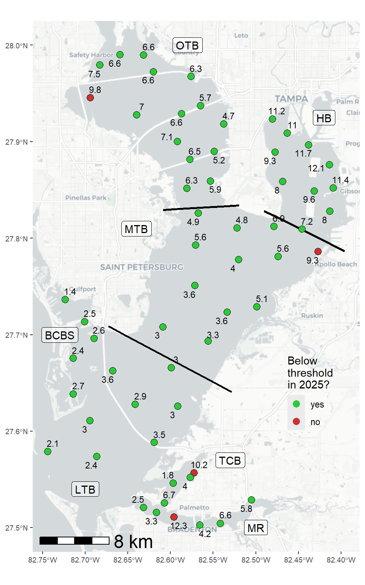
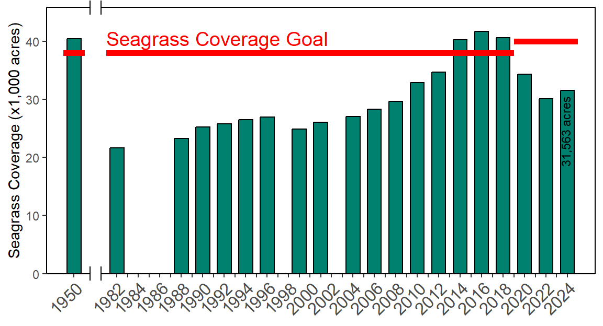
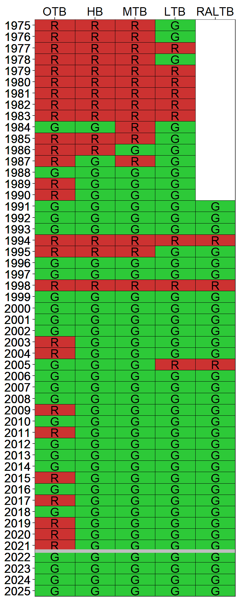

Bay Segment | 1992 - 1994 Hydrology (95% Prediction Interval, million m3) | Hydrology Estimate (million m3) | Compliance Load Adjustment Factor |
|---|---|---|---|
Old Tampa Bay | 383 - 548 | 468.63 | |
Hillsborough Bay | 753-1110 | 681.15 | 0.75 |
Middle Tampa Bay | 524-756 | 490.58 | 0.76 |
Lower Tampa Bay | 312-402 | 298.96 | 0.83 |
3 2025 Results Summary
Results from 2025 indicate that all RA bay segments met chlorophyll-a thresholds accepted by the FDEP to maintain FDEP Reasonable Assurance for Tampa Bay and to comply with the EPA TMDL (Figure 3.1) and estuarine numeric nutrient criteria for Tampa Bay (EPA Amended Approval Letter Jun. 28, 2013). Chlorophyll-a concentrations were notably lower than the previous year for many bay segments likely because of lower rainfall and no tropical storm activity impacting the region in 2025 (Figure 3.3). Blooms of harmful algal species (e.g., Karenia brevis, Pyrodinium bahamense) were not observed in any of the bay segments. Although understanding and mitigating blooms of Pyrodinium bahamense in OTB continues to be a focus of research and management efforts, summer concentrations in Old Tampa Bay were lower compared to prior years and the chlorophyll-a criteria was met for the fourth consecutive year of the RA period. Recommendations from the assimilative capacity assessment for Old Tampa Bay to address recurring water quality issues in that bay segment were presented to the Tampa Bay Nitrogen Management Consortium (TBNMC) and Old Tampa Bay working group (OTBWG) in 2025 (Stantec Consulting Services, Inc. 2024, 2025a, 2025b).
The TBEP, in partnership with the Southwest Florida Water Management District, has previously developed an integrated ecosystem model to evaluate the net environmental benefits that may result from implementing various management actions in Old Tampa Bay including: reducing point sources, nonpoint sources, and causeway obstructions in Old Tampa Bay (Sherwood et al. 2015). Management actions that proximate and respond to current Old Tampa Bay conditions have been further evaluated under the Old Tampa Bay assimilative capacity assessment project. Furthermore, the TBEP funded research conducted by the Florida Fish and Wildlife Research Institute to improve understanding of the cell physiology and behavior of Pyrodinium bahamense and evaluate the potential for using shellfish to mitigate these algal blooms in Old Tampa Bay. A water quality dashboard (https://shiny.tbep.org/wq-dash) continues to be available to further synthesize available data, assess additional water quality metrics (phytoplankton counts), and inform Consortium participants and other resource managers on the status of water quality in Tampa Bay. The dashboard allows for proactive response to anomalous water quality conditions on a month-to-month basis by the community. As part of the Old Tampa Bay assimilative capacity assessment, additional empirical and mechanistic modeling tools were developed as alternative lines of evidence that supported the findings from previous work.
Between 2022 and 2024, seagrasses throughout Tampa Bay increased by 1,426 acres. After several consecutive years of losses, aerial photographs taken in December 2023 - February 2024 indicate that Tampa Bay now harbors 31,563 acres of seagrass. Seagrass acreage showed the greatest increases in Hillsborough Bay (+773 acres), accounting for more than half of the increase observed baywide. Despite modest gains elsewhere, Old Tampa Bay lost an additional 326 acres of seagrass, the lowest estimate ever recorded for this bay segment. These trends are generally corroborated by annual transect surveys conducted by TBEP and its partners (shown in the seagrass transect dashboard), although slight gains in frequency occurrence in Old Tampa Bay suggest seagrasses may have increased in the last year. Additional research and discussion is being pursued by the Southwest Florida Seagrass Working Group to better understand the underlying mechanisms influencing these observations. Analysis of the role of long-term temperature increases and salinity reductions related to climate change and the potential relationships with seagrass declines since 2016 was published in 2024 (Beck et al. 2024). The next SWFWMD seagrass coverage estimate will be developed from aerial photographs acquired over the winter 2025-26 period.
Detailed results for the 2022-2026 RA implementation period are provided in Tables 3.2, 3.3, 3.4, 3.5, and 3.6 for each bay segment. Results for the Remainder Lower Tampa Bay segment (Boca Ciega Bay South, Terra Ceia Bay, Manatee River) are also included in this annual assessment (reporting began with the 2023 annual assessment). As of the 2025 reporting period, NMC Actions 2-5 are not necessary based upon observed water quality conditions within Tampa Bay, though work is being continued by the TBEP and TBNMC to further understand drivers of seagrass change and Old Tampa Bay’s current assimilative capacity. Individual annual reports of the bay’s conditions from 2025 can be found on the TBEP website, as specified in the following link (Beck, Burke, and Sherwood 2025) and the water quality dashboard. A summary of historic attainment of the regulatory chlorophyll-a thresholds for each of the bay segments is depicted in Figure 3.5.
Lastly, annual hydrologic conditions among all the major bay segments in 2025 were below 1992-1994 levels for all segments except Old Tampa Bay (Table 3.1). Therefore, hydrologic adjustments for evaluating compliance with individual entity load allocations/permitting targets should be applied for each major segment except Old Tampa Bay (Janicki Environmental, Inc. 2012, 2016). The estimated hydrologic loads for each bay segment relative to observed 1992-1994 levels are indicated in the table below. The estimated compliance load adjustment factors (if applicable) are also specified. A tool to calculate the hydrologic estimates and adjustment factors by bay segment is available online through an interactive dashboard and automatically updated as provisional hydrologic estimates are approved by monitoring agencies (https://shiny.tbep.org/tbnmc_hydrologic_estimates/).





Bay Segment Reasonable Assurance Assessment Steps | DATA USED TO ASSESS ANNUAL REASONABLE ASSURANCE | OUTCOME | ||||
Year 1 (2022) | Year 2 (2023) | Year 3 (2024) | Year 4 (2025) | Year 5 (2026) | ||
NMC Action 1: Determine if observed chlorophyll-a exceeds FDEP threshold of 9.3 ug/L | No (7.1) | No (6.2) | No (8.8) | No (6.8) | All years below threshold so far, not necessary for NMC Actions 2-5 | |
NMC Action 2: Determine if any observed chlorophyll-a exceedences occurred for 2 consecutive years | No | No | No | No | All years met threshold, not necessary for NMC Actions 3-5 | |
NMC Action 3: Determine if observed hydrologically-normalized total load exceeds federally-recognized TMDL of 486 tons/year | N/A | N/A | N/A | N/A | Not necessary due to observed water quality and seagrass conditions in the bay segment | |
NMC Actions 4-5: Determine if any entity/source/facility specific exceedences of 5-yr average allocation occurred during implementation period | Not necessary when chlorophyll-a threshold met | |||||
Bay Segment Reasonable Assurance Assessment Steps | DATA USED TO ASSESS ANNUAL REASONABLE ASSURANCE | OUTCOME | ||||
Year 1 (2022) | Year 2 (2023) | Year 3 (2024) | Year 4 (2025) | Year 5 (2026) | ||
NMC Action 1: Determine if observed chlorophyll-a exceeds FDEP threshold of 15 ug/L | No (8.9) | No (6.9) | No (10.7) | No (11) | All years below threshold so far, not necessary for NMC Actions 2-5 | |
NMC Action 2: Determine if any observed chlorophyll-a exceedences occurred for 2 consecutive years | No | No | No | No | All years met threshold, not necessary for NMC Actions 3-5 | |
NMC Action 3: Determine if observed hydrologically-normalized total load exceeds federally-recognized TMDL of 1451 tons/year | N/A | N/A | N/A | N/A | Not necessary due to observed water quality and seagrass conditions in the bay segment | |
NMC Actions 4-5: Determine if any entity/source/facility specific exceedences of 5-yr average allocation occurred during implementation period | Not necessary when chlorophyll-a threshold met | |||||
Bay Segment Reasonable Assurance Assessment Steps | DATA USED TO ASSESS ANNUAL REASONABLE ASSURANCE | OUTCOME | ||||
Year 1 (2022) | Year 2 (2023) | Year 3 (2024) | Year 4 (2025) | Year 5 (2026) | ||
NMC Action 1: Determine if observed chlorophyll-a exceeds FDEP threshold of 8.5 ug/L | No (5) | No (3.7) | No (7.8) | No (5.7) | All years below threshold so far, not necessary for NMC Actions 2-5 | |
NMC Action 2: Determine if any observed chlorophyll-a exceedences occurred for 2 consecutive years | No | No | No | No | All years met threshold, not necessary for NMC Actions 3-5 | |
NMC Action 3: Determine if observed hydrologically-normalized total load exceeds federally-recognized TMDL of 799 tons/year | N/A | N/A | N/A | N/A | Not necessary due to observed water quality and seagrass conditions in the bay segment | |
NMC Actions 4-5: Determine if any entity/source/facility specific exceedences of 5-yr average allocation occurred during implementation period | Not necessary when chlorophyll-a threshold met | |||||
Bay Segment Reasonable Assurance Assessment Steps | DATA USED TO ASSESS ANNUAL REASONABLE ASSURANCE | OUTCOME | ||||
Year 1 (2022) | Year 2 (2023) | Year 3 (2024) | Year 4 (2025) | Year 5 (2026) | ||
NMC Action 1: Determine if observed chlorophyll-a exceeds FDEP threshold of 5.1 ug/L | No (3.6) | No (2.6) | No (4.6) | No (3.1) | All years below threshold so far, not necessary for NMC Actions 2-5 | |
NMC Action 2: Determine if any observed chlorophyll-a exceedences occurred for 2 consecutive years | No | No | No | No | All years met threshold, not necessary for NMC Actions 3-5 | |
NMC Action 3: Determine if observed hydrologically-normalized total load exceeds federally-recognized TMDL of 349 tons/year | N/A | N/A | N/A | N/A | Not necessary due to observed water quality and seagrass conditions in the bay segment | |
NMC Actions 4-5: Determine if any entity/source/facility specific exceedences of 5-yr average allocation occurred during implementation period | Not necessary when chlorophyll-a threshold met | |||||
Bay Segment Reasonable Assurance Assessment Steps | DATA USED TO ASSESS ANNUAL REASONABLE ASSURANCE | OUTCOME | ||||
Year 1 (2022) | Year 2 (2023) | Year 3 (2024) | Year 4 (2025) | Year 5 (2026) | ||
NMC Action 1: Determine if observed chlorophyll-a exceeds FDEP threshold of 5.1 ug/L | No (3.6) | No (2.6) | No (4.6) | No (3.1) | All years below threshold so far, not necessary for NMC Actions 2-5 | |
NMC Action 2: Determine if any observed chlorophyll-a exceedences occurred for 2 consecutive years | No | No | No | No | All years met threshold, not necessary for NMC Actions 3-5 | |
NMC Action 3: Determine if observed hydrologically-normalized total load exceeds federally-recognized TMDL of 349 tons/year | N/A | N/A | N/A | N/A | Not necessary due to observed water quality and seagrass conditions in the bay segment | |
NMC Actions 4-5: Determine if any entity/source/facility specific exceedences of 5-yr average allocation occurred during implementation period | Not necessary when chlorophyll-a threshold met | |||||